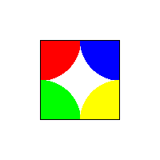

ClipOutput()
语法
ClipOutput(x, y, Width, Height)概要
在当前绘图输出中定义一个封闭区域限制所有绘图在它的范围之内。任何绘制到封闭区域外绘制的像素将被裁剪。
参数
x, y, Width, Height 封闭区域的位置和大小。 (x, y) 的坐标总是绝对的并且不受调用 SetOrigin()的影响。
返回值
无.
备注
该命令只对通过 ImageOutput() or CanvasOutput()来创建绘图输出的作用.
图形原点不被调用此功能修改。为了使所有的绘图相对的剪取框的左上角，如果需要的话必须单独调用SetOrigin()。
Plot() 和 Point() 命令因为执行无边界检查的性能原因，因此不影响此命令。
示例
If OpenWindow(0, 0, 0, 200, 200, "2DDrawing Example", #PB_Window_SystemMenu | #PB_Window_ScreenCentered) If CreateImage(0, 200, 200, 24, $FFFFFF) And StartDrawing(ImageOutput(0)) ClipOutput(50, 50, 100, 100) ; restrict all drawing to this region Circle( 50, 50, 50, $0000FF) Circle( 50, 150, 50, $00FF00) Circle(150, 50, 50, $FF0000) Circle(150, 150, 50, $00FFFF) DrawingMode(#PB_2DDrawing_Outlined) Box(50, 50, 100, 100, $000000) StopDrawing() ImageGadget(0, 0, 0, 200, 200, ImageID(0)) EndIf Repeat Event = WaitWindowEvent() Until Event = #PB_Event_CloseWindow EndIf

参阅
UnclipOutput(), SetOrigin(), OutputWidth(), OutputHeight()
已支持操作系统
所有